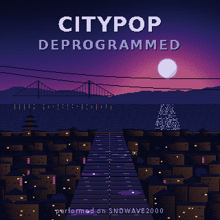

Media Player - CITYPOP DEPROGRAMMED

Keys: Space play/pause, N/P next/previous, ←/→ 10 seconds, ↑/↓ volume, 1-9 0 - = tracks.
Sound Recorder - (Untitled)
0.00 sec.Length:
0.00 sec.
Event List - TRACK.MID
Clock
Notepad - LINERS.TXT
CITYPOP DEPROGRAMMED is a theme and eleven variations for a quiet night in a harbour town. It starts in the evening rain and ends at first light. Put it on after the club, or when friends are still on the couch and nobody wants to go home yet.
The theme is eight bars long. A pick-up of four notes rises to the third and then leaps to the sixth, over Fmaj7, Em7, A7, Dm9 and G13. Every track after it is a variation. Each one moves the theme to another key, tempo or mode, puts it in waltz time or turns it upside down. Variation VII is the theme inverted, and it is the slow heart of the record. One variation quotes, once and briefly, the first bar of Paganini's Caprice No. 24 (1817, public domain).
Every note was played by SNDWAVE2000. That is sixteen real Windows 3.11 Sound Recorders in DOSBox Pure, one Windows for each part, driven by MIDI and rendered offline. The mixer only sets levels and pans and adds a shared echo and room. The electric pianos and basses were recorded from the publisher's own instruments into the album's sound library, the Rainy Loft Collection, next to rain, a city at night, a far train and an espresso machine. Those field recordings are CC0.
Credits
- Composed, arranged and performed on SNDWAVE2000 by Algorithmic Industries (William Sharkey).
- Sound library: Rainy Loft Collection (Harborlight Audio Works Co., Ltd., 1988), with the SNDWAVE2000 pack discs Paulywaulophone, Tape Parlour, Polysynth Showroom, Courtyard Chapel and Studio Archive.
- Sounds by Paul Chauncy (Uncle Homunculus / Paulywauly).
- Electric piano and bass: the Bele Dance instruments by William Sharkey.
- Field recordings and instrument samples (CC0, Freesound): see SOURCES.TXT.
- Windows 3.11 and Sound Recorder © Microsoft Corporation. DOSBox Pure (GPL-2.0). Fonts: DejaVu.
- Paganini, Caprice No. 24 in A minor, Op. 1 (published 1820), public domain.
SOURCES.TXT lists every recording, its author, licence and page. The compositions and recordings on this page are CC0. SNDWAVE2000 is free.